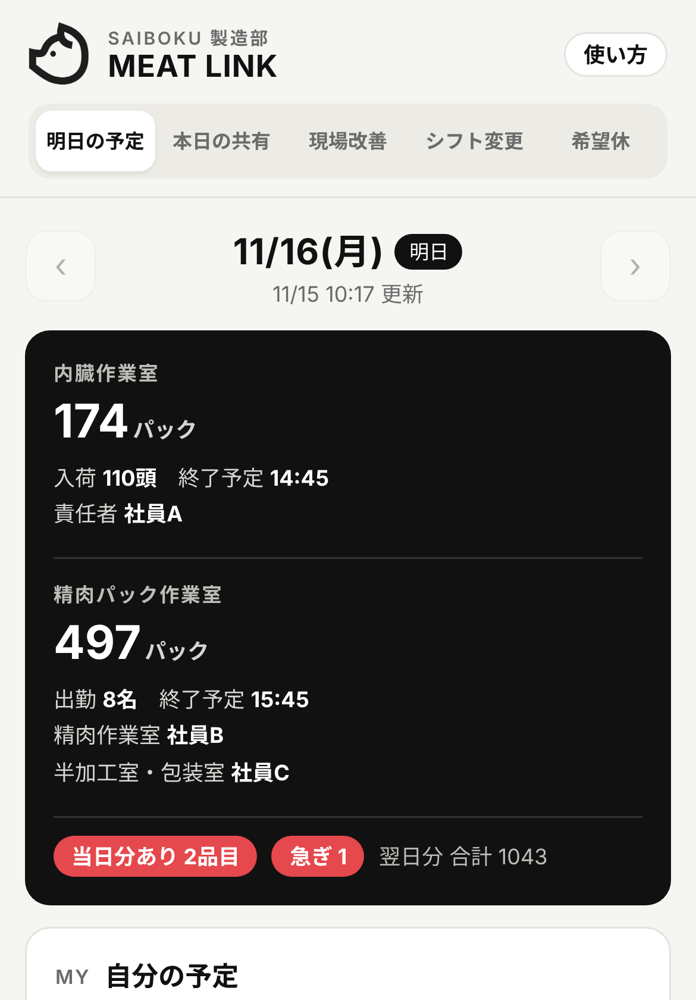
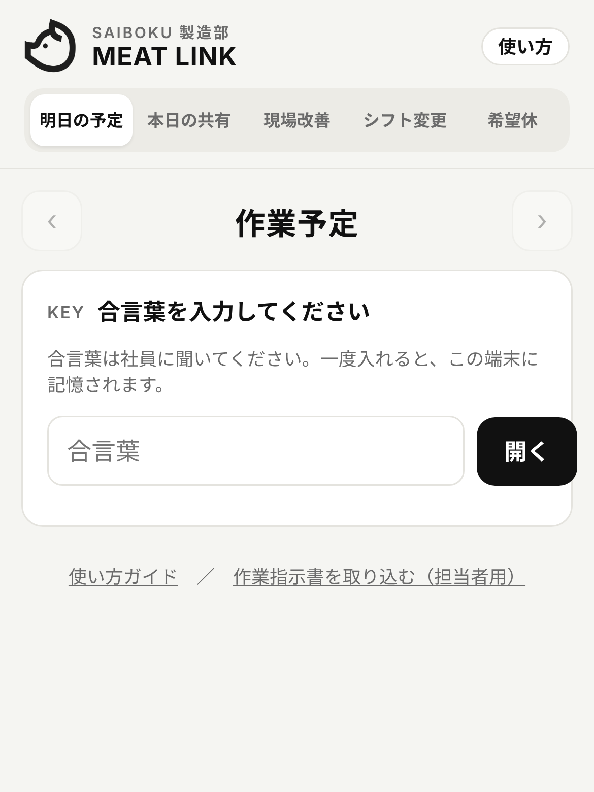
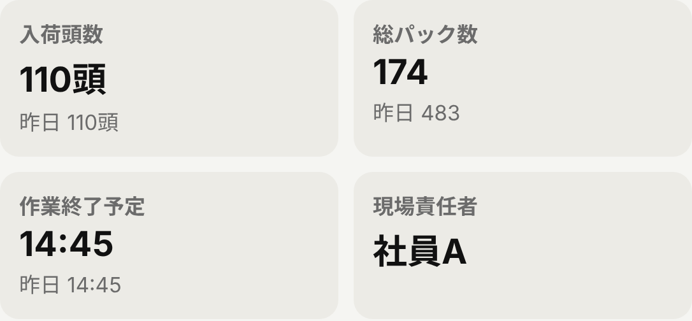
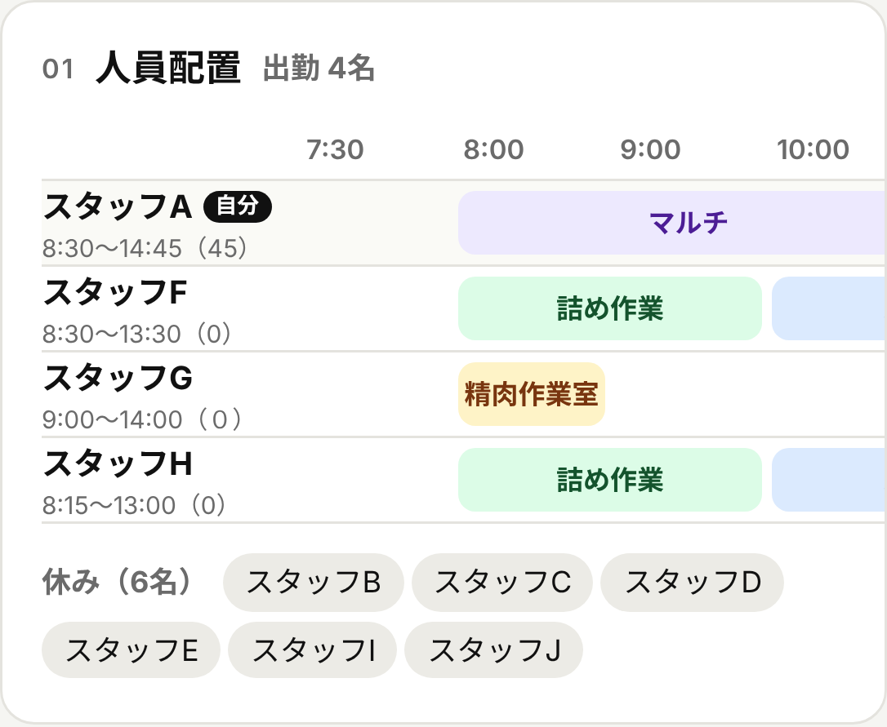
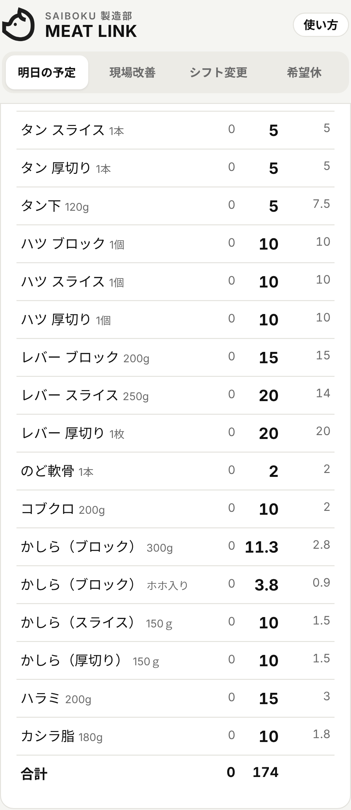
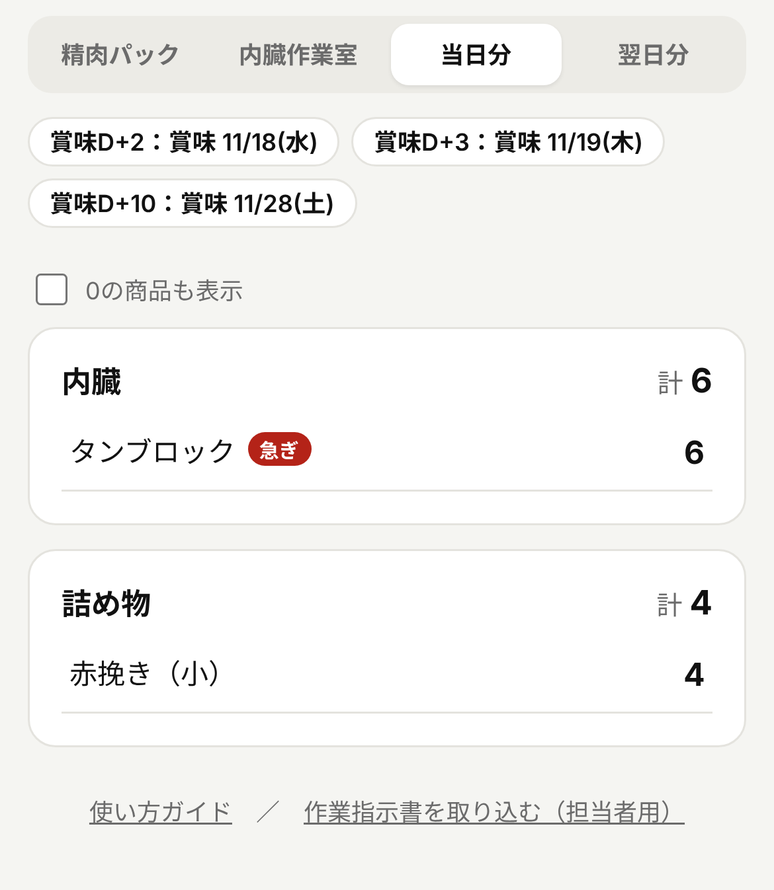
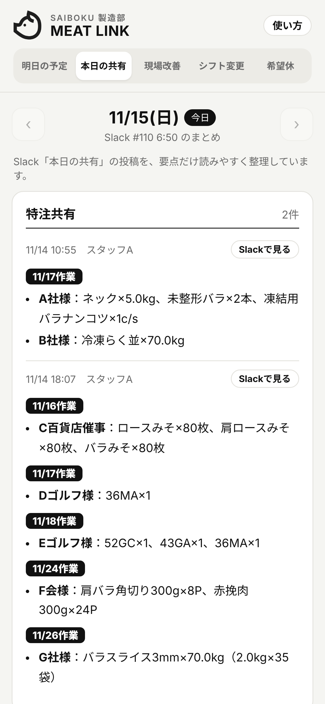

MEAT LINK
使い方ガイド（メンバー向け）
明日の作業予定・本日の共有・現場改善・シフト変更・希望休が、ひとつのアプリで見られます。ログインは不要です（はじめに合言葉を入れます）。
01このアプリでできること
画面の上にある4つのボタン（タブ）を押して、見たいページに切り替えます。

02アプリの開き方
スマホのカメラでQRコードを読み取ってください。
https://s-meat.github.io/meat-portal/
ホーム画面に追加しておくと便利です
- 画面下の 共有（□に↑のマーク）を押す
- 「ホーム画面に追加」を押す
- 右上の「追加」を押す
- 右上の ︙ を押す
- 「ホーム画面に追加」を押す
- 「追加」を押す
ホーム画面にブタのマーク「MEAT LINK」が出たら完了です。次からはそこから開けます。
02+はじめて開くとき（合言葉）
はじめて開くと「合言葉を入力してください」と出ます。社員に聞いた合言葉を入れて「開く」を押してください。

- 一度入れると、そのスマホに記憶されます。次からは入力不要です。
- 合言葉は社内だけのものです。家族や社外の人に教えないでください。
- 合言葉が変わったときは、もう一度入力画面が出ます。
03明日の作業予定を見る
アプリを開くと「明日の予定」が表示されます。
- 日付：表示している作業日です。横に「明日」「今日」などと出ます。
- ‹ ›：前の日・次の日の予定に切り替えます。
- ○/○ ○:○○ 更新：作業予定が最後に取り込まれた時刻です。
黒いカード（まとめ）
内臓作業室・精肉パック作業室それぞれの パック数・終了予定・責任者 がひと目でわかります。
- 当日分あり … その日に作って出す商品があります。下の「当日分」を必ず見てください。
- 急ぎ … 急ぎの商品がある数です。
- 当日分なし … 当日分はありません。
04自分の予定を見る
「自分の予定」で 自分の名前 を選ぶと、何時から何の作業をするかが出ます。

- 一度選ぶと、次からは自動で自分の名前が選ばれています。
- 休みの日は「休み」と出ます。
- 名前が見つからないときは、その日の指示書に名前が入っていません。社員に確認してください。
05作業室ごとのくわしい予定
黒いカードの下にあるボタンで、見たい作業室を切り替えます（精肉パック → 内臓作業室 → 当日分 → 翌日分の順。最初は精肉パックが出ます）。
数字のまとめ
入荷頭数・総パック数・作業終了予定・責任者です。小さい字は「昨日」の実績です。

特記事項（黄色い枠）

人員配置（だれが・何時に・何をするか）
左に名前と勤務時間、右に時間ごとの作業が色付きで出ます。表は 横にスクロール できます。自分の行には「自分」マークが付きます。一番下に、休みの人がまとめて出ます。

商品別の作業予定（内臓作業室）
商品ごとに「当日分」「翌日分」を何パック作るかが出ます。数が0の商品はかくしています。全部見たいときは「0の商品も表示」にチェックを入れてください。

06当日分・翌日分を見る
「当日分」「翌日分」を押すと、売場ごと（スライサー・内臓・AtoZ・まな板・詰め物など）に、作る商品と数が出ます。

- 急ぎ が付いた商品は先に作ってください。
- 上の丸いラベルは、ラベルに印字する 賞味期限 の目安です（D+2 ＝ 作業日の2日後）。
- 数が0の商品はかくしています。「0の商品も表示」で全部見られます。
06+本日の共有を見る
「本日の共有」タブでは、毎朝6:50にSlackの #110 に出る「本日の共有」の中身を、要点だけ 読みやすく整理して表示します。Slackを開かなくても確認できます。

- チャンネルごと（特注共有・不具合/クレーム共有・終礼ノートなど）にまとまっています。
- 特注は 作業日ごと に「取引先：品目×数」の形で出ます。
- 一番上の 「終礼ノート」 の「開く」を押すと、夕方にSlackに出た終礼ノート（PDF）がそのまま見られます。「－」「＋」で縮小・拡大、「閉じる」で戻ります。前の日の終礼ノートも下のボタンから開けます。
- PDFが付いた投稿は「資料を見る」で中身を見られます。
- くわしく見たいときは「Slackで見る」を押すと、元の投稿が開きます。
- ‹ › で前の日の共有も見られます。
07現場改善・シフト変更・希望休
上のタブを押すと、それぞれのページがアプリの中に開きます。使い方は今までと同じです。
- 現場改善：改善のアイデアや困りごとを送るフォームです。
- シフト変更：シフト変更・当日欠勤は、紙ではなくここから申請します。
- 希望休：カレンダーで日付を押して申請します。（1回押す＝希望休、すばやく2回＝時間指定・有給）
うまく表示されないときは、ページ上の 「表示されない時は別タブで開く ↗」 を押してください。
08こんなときは
| こまったこと | どうする |
|---|---|
| 「作業予定がまだありません」と出る | まだ作業指示書が取り込まれていません。少し待ってから開き直してください。 |
| 「読み込めませんでした」と出る | 電波の良い所で「再読み込み」を押してください。 |
| 前の内容のまま変わらない | アプリを閉じて、もう一度開いてください。 |
| 自分の名前がない・内容がちがう | 指示書の内容をそのまま表示しています。社員に伝えてください。 |
| 合言葉を聞かれる・「合言葉が違います」と出る | 社員に合言葉を確認して、入れ直してください。 |
| 「まだ共有がありません」と出る | 朝6:50のSlackのまとめが出る前です。7時すぎに開き直してください。 |
| 別の人の名前が選ばれている | 「自分の予定」で自分の名前を選び直してください。 |
製造部 1課 ミートチーム ／ 画面の写真は見本です（名前は仮のものです）